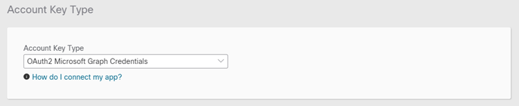
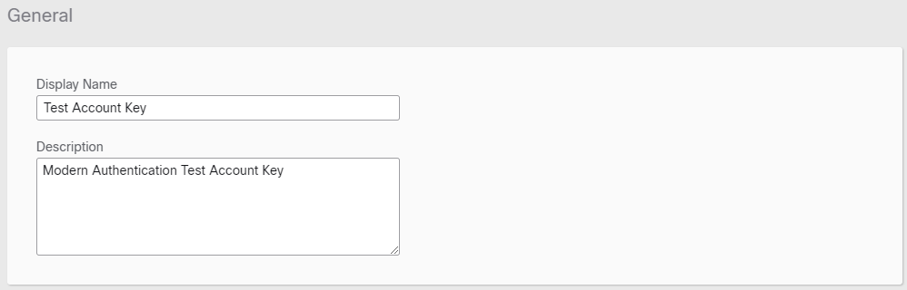
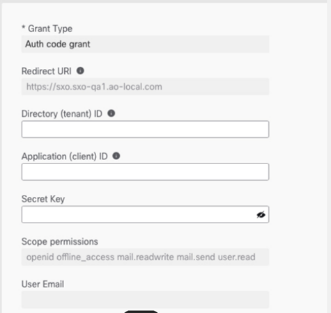
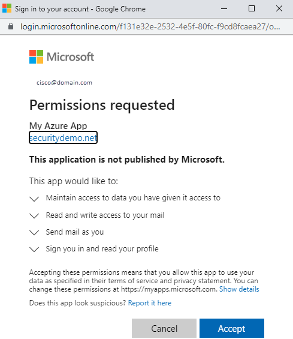

Microsoft Modern Authentication uses the OAuth2 protocol and security tokens that administrators can use to approve or revoke access to resources. The Modern Authentication method eliminates some of the risks associated with the exchange of a username and password every time a user needs to authenticate.
SecureX Orchestration allows users to generate OAuth2 tokens to authenticate with Azure AD and Microsoft Outlook 365.
Use OAuth2 Microsoft Graph Credentials account keys with Email workflow activities, Email Events, and Microsoft Graph Endpoint targets.
To successfully create an account key based on OAuth2 Microsoft Graph Credentials, you must have an application and service principal that can be used with role-based access control in Azure AD. In many organizations, app creation and configuration is handled by an administrator. Orchestration requires an application that can run in a single organization. Perform the steps in the Azure Active Directory documentation from Microsoft. Ensure that you open API Permissions and configure the following permissions for the app: Mail.Read, Mail.ReadWrite, Mail.send, User.Read. The Tenant ID and Client ID are located on the Overview page for the App. You can obtain or generate a Secret Key on the Certificates and Secrets page of the Azure app.
Complete the following steps to create a new OAuth2 Microsoft Graph Credentials account key:
These steps assume that a user or application already exists in Azure Active Directory. You will need to enter information from Azure AD into the account key and copy information from the account key into the Azure application. If you do not have access to make changes to Azure AD, ensure that you contact your Azure AD administrator for assistance.
In the left navigation menu, click Account Keys.
Click New Account Key.
From the Account Key Type drop-down list, choose OAuth2 Microsoft Graph Credentials.

Enter a unique display name for the account key in the Display Name field and a brief description in the Description field.

Copy the Redirect URI and enter it in the Azure app details on the Overview page of the Azure app.

In the Authorization Details area, enter the following information from the Overview page of the application in Azure AD. If you do not have the necessary information, obtain it from Azure AD or contact your Azure administrator.
Directory (tenant) ID
Application (client) ID.
Secret Key
See the Registering an Application and Obtaining OAuth2 Information section of this document for assistance locating your Tenant ID, Client ID, and Secret Key.
Click Authorize.
A Microsoft account dialog will open. Click the account to associate with the account key.

Enter the password for the account and click Sign in.
Verify that you accept the permissions requested and click Accept
The new account key will be displayed at the top of the account keys list.